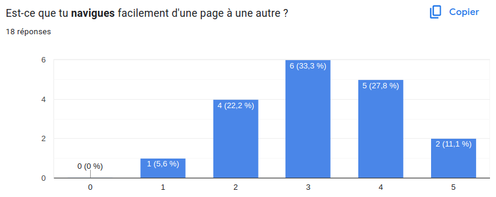
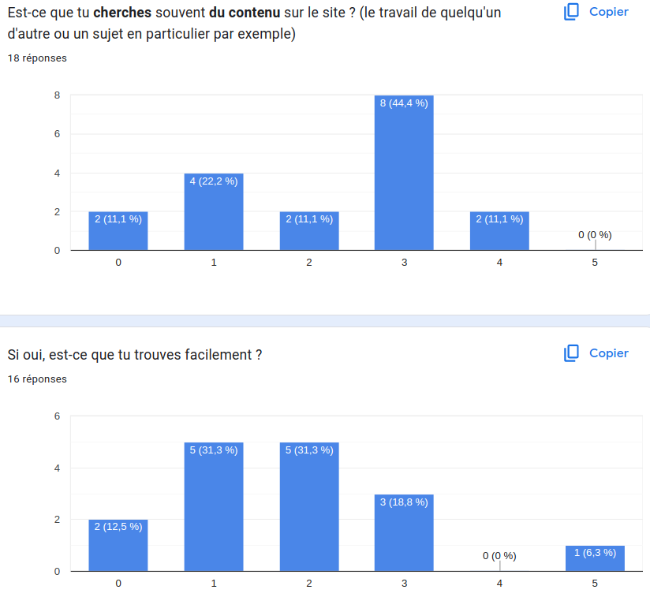
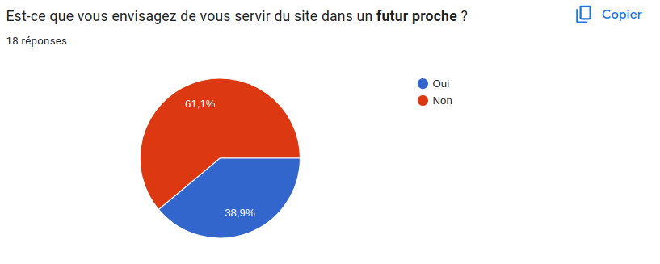
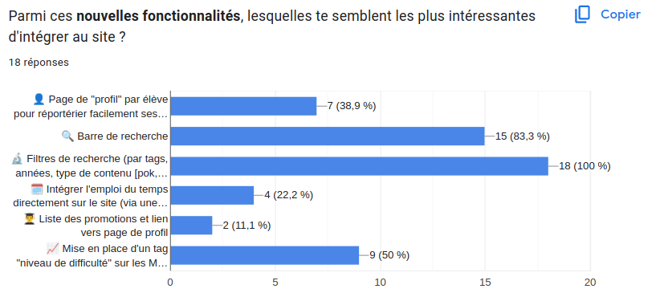

Modification du site de Do-It
- eleventy
- Nicolas BERT
Amélioration du site (navigation, recherche ...)
Pour ce MON, j'ai décidé de venir à François Brucker et de modifier un peu le site de Do-It pour le rendre plus agréable à l'utilisation (navigation, recherche ...) mais aussi à la maintenance d'une année sur l'autre ...
Pour cela j'ai consulté les professeurs référents de Do-It sous forme d'un entretien ainsi que les élèves de Do-It sous la forme d'un sondage.
Les retours par rapport au site
Globalement voilà ce qui est ressorti :
Esthétique
L'esthétique du site est convenable mais pourrait être améliorée. Mais je ne suis pas designer donc ça sera pour quelqu'un d'aautre !
Contribution
Pour tout le monde il est généralement facile de contribuer au site, peut-être un peu de mal au début mais on s'y fait.
- Les personnes ne savent combien de ./ ou ../ il faut mettre
- l'arborescence est un peu complexe --> refonte
- les shortcodes ne sont pas forcément connus --> clarifier via un tuto
- la gestion des tags --> clarifier avec un tuto
Arborescence
L'arborescence est en effet peu claire pour beaucoup --> refonte de l'arborescence par année

Navigation
La navigation n'est pas super fluide et intuitive --> amélioration de la navbar

Recherche
La recherche de contenu est peu fréquente de la part des élèves mais ceux qui cherchent ne trouvent pas facilement les informations. --> mise en place d'un crawler et d'une barre de recherche

Mots-clés
La mise en place de mots-clés semble être l'élement qui fait l'unanimité, tout le monde trouve utile l'implémentation de mots-clés. --> intégration dans la recherche avec des filtres
Utilisation dans le futur
Selon les réponses, 61% des élèves n'utiliseront pas le site plus tard. Ceux qui vont l'utiliser on indiqué que cela sera principalement pour faire de la veille technologique et se tenir informé.

Les améliorations voulues
Pour beaucoup, c'est la gestion des mots-clés qui arrive en première place.
Nouvelles fonctionnalités demandées
Il ressort des réponses que les filtres de recherche ainsi qu'une barre de recherche seraient les plus bénéfiques lors de l'utilisation du site. Tous ces problèmes seront, je pense, résolus avec l'arrivée de la barre de recherche.

Bac à sable
Voici également une liste de suggestions qui ont été faite en commentaires libres, certaines ne sont techniquement pas réalisables et d'autres que je trouve inutiles mais je les mets quand même !
- Implémentation du "MON du mois" et de sa mise en valeurs sur le site.
- Editeur markdown intégré
- Boutons de navigation au sein des pages
- Bouton j'aime
- Recommandations automatiques de MON à la fin d'un MON
- Image mise en avant sur les card des dans la liste des POK&MON
- Navigation par promo et navigation thématique
- Filtrage suivant la dominante (info, si, gestion de projet)
- Mise en place d'un tag "dfficulté" sur les POK&MON
- Mise en place de tags de catégorie de MON (Cours, Tuto, REX, Application ...) pour indiquer le type de MON, suivi de tuto, suivi de cours, implémentations ...
Mes modifications
Voilà mes différentes modifications en vrac :
-
Installation du plugin Pagefind. Celui-ci va, après la compilation du site en HTML, parcourir (crawler) toutes les pages et indexer tout le contenu. Ces indexations serviront ensuite lors de la recherche. Ce plugin fournit également une UI préfaite que l'on peut relier facilement aux indexations réalisées.
-
Avec ça, j'ai également ajouter des attributs sur les templates afin d'indiquer à Pagefind que cet élément devra servir de filtre dans la recherche.
-
Amélioration de la navbar en ajoutant des raccourcis vers les différentes pour y accéder plus rapidement plutôt que de devoir retourner sur la page d'accueil. Gestion des responsive en n'affichant que les pages nécessaires pour ne pas surcharger la navbar.
-
Ajout de couleurs sur les "labels" dans les cards. Les auteurs sont en bleus et les tags en jaune.
-
Ajout de l'année sur la liste des travaux qui s'obtient de manière automatique suivant le dossier dans le quel se trouve le fichier.
-
Implémentation d'un section "Promotions" visant à réportérier la liste des promotions de Do-It et ainsi permettre à chaque élève d'avoir comme une page de profil pour réportorier ses POK, MON mais aussi ses coordonnées ...
-
J'ai aussi créer un fichier HELP.md pour indiquer tous les nouveaux changements, les tags à mettre ...